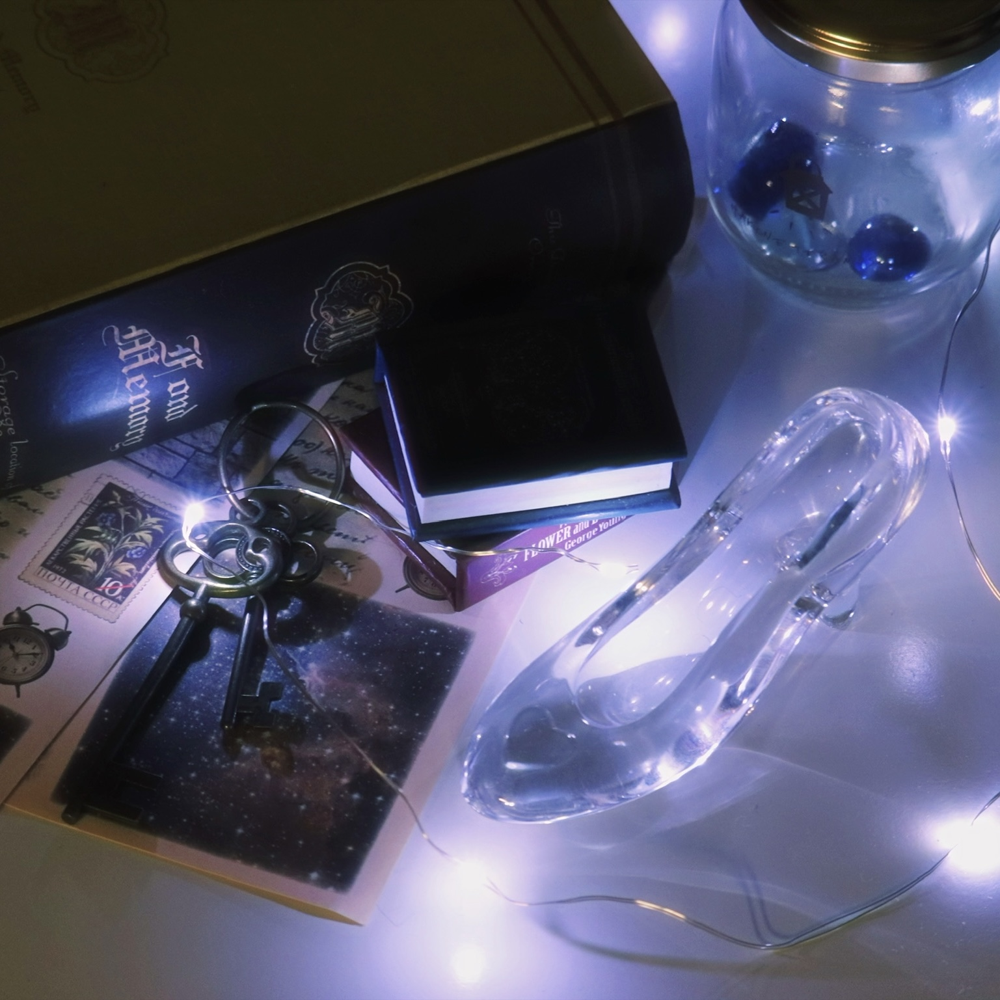

PROFILE
Taniguchi Ayaka
2003.08.29 / University student
2003.08.29 / University student
Skills :
Figma・XD・Illustrator・Photoshop
Figma・XD・Illustrator・Photoshop
カメラ、音楽鑑賞が趣味です。アイドルが好きで、ライブに行くことも多いです。最近は編み物も始めました。
PORTFOLIO
My Work
情報デザイン
Share Navi
山本ゼミ
BuzzDan
山本ゼミ
Site Redesign
